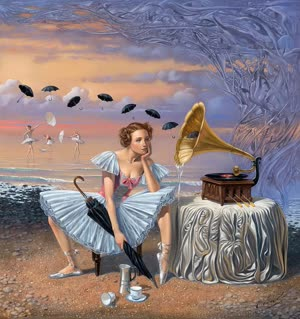

I've been reflecting on the existential angle of being a schizoid (and I'm not one). For those who don't know, schizoids are basically pretty normal people, but they don't care about relationships and don't really feel anything (including emptiness), and yet they don't care. I made a video about them here. They might look very stoic, but when I think of myself in their shoes, it feels utterly sad and scary. Given that schizoids have no emotions despite their intellectual abilities and cannot imagine themselves in ways that would make them feel discomfort in the future - thus having no goals or plans - they live in the here and now, similar to stray cats. They also don't experience pleasure either; they just spend their leisure time learning C++ a bit for absolutely no reason and then quickly abandon it, read Schopenhauer for the 80th time about his pessimism while feeling nothing about it, and watch a movie over and over again just to pass the time.
They don't care if they cease to exist or die as long as it's not painful for them. This means that even if a schizoid who grew up agnostic (e.g., in Latvia or something) encounters thoughts about death, they won't ever consider whether there is something after it - whether through reincarnation or going to Hell, etc. Because that discomfort isn't right in their face, the schizoid will simply say "meh" about it again and return to the cycle of sleep -> eat -> work -> kill time -> repeat, over and over again.
It just doesn't make sense to me how they can't think or imagine their future selves (or maybe that's not true?). When I think about it, from the mentality of the schizoid, nothing ever makes sense in this whole existence, and your emotions of despair don't matter either; it's all like pure nihilism or absurdism, but without any motivations or emotions. I visualize a video collage of a frog playing the banjo, footage of people fighting, cute dogs playing around, my friend calling me out, the whole solar system moving, E. coli in intestines, the Hiroshima bomb, baby Rei Ayanami, Jews praying, Hitler yelling at a speech, and so on. This imagery makes me feel intensely scared and afraid; it makes me cry heavily when considering the schizoid's perspective of life, where absolutely nothing matters, including whether I cry hard or go "meh."
It just feels terrifying to put myself in a schizoid's shoes. I don't know how to explain it. From the schizoid's perspective, it's just acceptance of everything. Nihilists are atheists; the schizoid can be a theist but not care about God, Hell, or Heaven, even if they believe in them. It's as if they're telling us that all emotions are meaningless, so why care about them? I've wondered if this schizoid way of thinking is even a school of thought in itself. The only thing that doesn't make sense to me, even rationally, is that they don't care about the future.
I thought they seek to be cozy even if they don't care about anything, but no - they don't care about catastrophic events happening to THEM unless they're in the here and now. But I think they're irrational here, just like regular people who are comfortable and don't think about a possible future dystopia. I am not talking about emotional urgency, but the will to care about the future even when they don't feel like it since it is the right thing to do. That's very comforting; it shows that schizoids aren't "RATIONAL HYPERINTELLIGENT CREATURES" but are also very flawed, just like everyone else. So it's okay to have friends and to be happy... :D

N.B.: Yes, it was me who wrote that thread on Lainchan, I intended to make it a blog on my own. Here we go. )
Update: Also, I realized that schizoids basically live in their heads, and that's why they're detached from everything in real life. Makes sense.
Update 2: I think schizoids don't even "exist." Probably they're just symptoms provided by the DSM and that's it lol. They probably are afraid of intimacy or something.